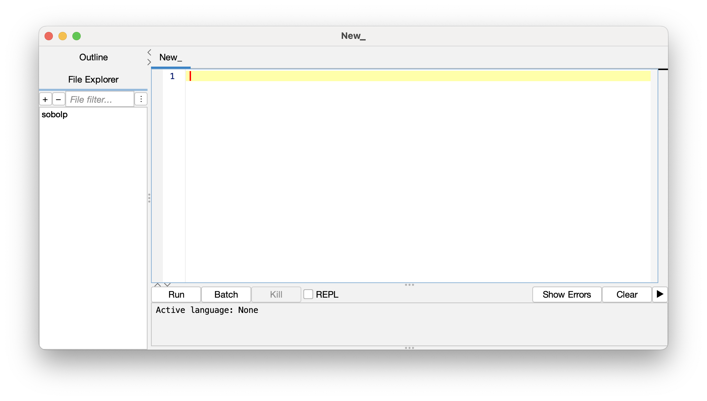

Intermediate Fiji: Macros and Scripting
Peter Sobolewski (he/him)
Systems Analyst, Imaging Applications - Research IT
Use to advance the slide
Acknowledgements
- Erick Ratamero (JAX), who prepared the original of these materials
- Philo van Kemenade for the set of slides Erick used for the structure of this slide deck and some images
This Workshop
- Programming building blocks
- Putting the pieces together
- Writing complete structures
These Slides
https://thejacksonlaboratory.github.io/ fiji_workshops/IntermediateFiji_macros.html
Getting help
- Macro Function Documentation at https://imagej.nih.gov/ij/developer/macro/functions.html—open it in a new tab!
[Plugins > Macro > Record...]is your best friend- Fiji Training Notes by Cameron Newell, Monash University
- image.sc forum
Why macros?
- Automation: do the same thing many times over
- Reproducibility: do exactly the same thing every time, show the world what you've done
- Sharing: let someone else do exactly the same analysis as you
- Extension: do things Fiji cannot do by default
Batch Processing
Why batch process? File conversion, batch processing, scripting
Manual analysis (while sometimes necessary) can be laborious, error prone and not provide the provenance required. Batch processing allows the same processing to be run on multiple images.
The built-in [Process > Batch] menu has lots of useful functions:

- Start using:
[Plugins > Macros > Record...] - Almost every action you take in Fiji will be recorded as a macro command--this includes many Plugin functions!
- The recorded Macros can be saved ("Create" button and Save) and then re-run
[Plugins > Macros > Run...]
Exercise: Macro Recorder
- Download this zip file
BBBC008_partial.zipand extract to a known location. - Create a second, empty folder called "Output" next to it
- Open
Task1_MacroRec.pdfin a new tab and follow the instructions there.
The Script Editor
[File > New > Script...] (or keyboard shortcut [)

The Script Editor can can be used to edit, write, and run macros & scripts. It has a number of nice features:
- Support for multiple scripting languages, including ImageJ macro
- Code hints and completions
Runbutton to easily test macros- Templates to help get you started
- Help menu with resources
Handy shortcuts:
- Code suggestions/completions:
- Control-Space to trigger completions
- Arrows to select completions, Tab to accept them
- Command/Control-R: Run the whole macro
- Shift-Command/Control-R: Run selected lines
ImageJ Macro Language
We will be using the ImageJ Macro language. It's the native programming language to ImageJ, is used by the Macro Recorder, and it's fairly simple—an ideal starting point.
- Why macros?—A handy overview
- ImageJ Macro Language documentation
Note: If you want to explore other languages on your own, the ImageJ Scripting Guide can be a good place to start.
Building Blocks
Variables

Variables store values under a specified name

Types of variables
Variables can store values of different types:
string - a sequence of characters, comprising text
"a", "London", 'X', 'General Assembly'int - an integer or whole number
1, 5, 9999, -7float - a floating point number (using a decimal point)
3.14, 1.68, 1.0bool - boolean; binary true or false values
true, falseNote: ImageJ Macro Language variables are dynamically typed—you don't need to declare the type.
Assigning variables in ImageJ Macro
name = "Erick";
height = 1.73;
state = "CT";Why does running this macro do nothing? 🤔
Changing types
'Casting' a variable to another type requires some of the built-in functions we have mentioned.
// cast strings into numbers (int and float)
a = parseInt("42");
b = parseFloat("1.69");
// cast a number into a string with specified decimal places
c = d2s(1.5333, 2);
// print the value stored in the variable `c`
print(c);
What would print(c+1); print? 🤔
Exercise: Variables and Types
Choose 4 things around you and create variables of 4 different types based on them.
If you need to, refer to the variable types slide.
Operators
You can process the values in your variables by operators :
| = | Assignment: assign a value to a variable |
| == | Comparison: are two variables equal? |
| != | Comparison: are two variables not equal? |
|
<, >, <=, >= |
Less-than, greater-than, less or equal, greater or equal |
| +, -, *, / | Mathematical operators |
| &&, ||, ! | Logical operators: and, or, not |
Important: the type of the first operand will determine the result!
A few more handy operators:
| ++ |
Increment; add 1, e.g. i++
|
| -- |
Decrement; subtract 1, e.g. i--
|
| +=, -=, *=, /= | Perform the operation on the variable and re-assign |
String manipulation
| + |
+ operator on strings concatenates them
|
replace(string, old, new)
|
Take string, replace old occurrences with new
|
split(string, delimiter)
|
Split the string at every delimiter into an array of strings
|
lengthOf(string)
|
Return the length of string
|
endsWith(string, suffix)
|
Return true (1) if string ends with suffix
|
Exercise: Operators (strings)
Create two string variables :
first for your first name and last for your last name.
Can you make your full name by combining first and last?
(Cheating encouraged)
Collections
Collections of Values
Values can also be stored in a collection :we'll only talk about the Array
Arrays
We can store multiple values in an array:
An array is a ordered sequence of items (between [...]) each with their own index.
b = newArray(1, 3, 9, 4, 884328881);
n = newArray("first", "second", "third", "fourth");
m = Array.concat(b, n);
print(m[6]);
What is the index of the first element of the array? 🤔
Some array examples
// This macro demonstrates how to use the Array.* functions.
a1 = newArray(10, 5, 15, 2, 1.23456);
a2 = Array.copy(a1);
print("Array 2")
Array.print(a2);
a3 = Array.trim(a1, 2);
print("Array 3");
Array.print(a3);
Array.sort(a1);
print("Array 1");
Array.print(a1);
Array.getStatistics(a1, min, max, mean, std);
print("stats");
print(" min: "+min);
print(" max: "+max);
print(" mean: "+mean);
print(" std dev: "+std);
Array.fill(a1, -1);
Array.print(a1);
Some more array examples
// Arrays need not contain numbers!
a1 = newArray("one", "two", "three", "four");
print("");
a2 = Array.copy(a1);
Array.print(a1);
a2 = Array.trim(a1, 2);
Array.print(a2);
Array.sort(a1);
Array.print(a1);
Putting the pieces together
Loops
"Loops" are a form of "flow of control" (control flow statement) that specifies iteration of a section of code.
That same code block should be repeated a defined number of times or until some condition has been met, etc.
For Loops
You use loops to repeat a statement.
A for-loop is useful when you know how many times you want to repeat an action (e.g. for every item in an array)
for (start; condition; increment){
do something
}An example of using a for loop:
ages = newArray(18, 21, 16, 12);
for(i=0; i< lengthOf(ages); i++){
print(ages[i]);
}
Output:
18
21
16
12
While Loops
A while-loop is useful when you don’t know how many times you want to run, but you know when you need to stop.
A while-loop statement checks a condition and loops until the condition is no longer satisfied.
while (condition){
do something;
}
An example of a while loop:
x = 2;
while(x > 0){
print("hooray!");
x = x - random; // `random` is a built-in, returns a random number between 0 and 1
}
How many times will this code print "hooray!"?
Conditional Statements
Conditionals enable your code to perform different actions/computations based on the boolean value of a specific expression, the condition.
Conditional statements enable you to deal with multiple options.
A part of your code is executed based on the truth value of a condition. You perform conditional checks with: if, else
if(condition){
action
}
else{
final action
}age = 17;
if(age < 21){
print("no drinks for you");
}
Notice, you don't need an else, if you don't need one.
Functions
Functions are callable units of code with defined interfaces, meant to be invoked multiple times.
They allow you to re-use code, rather than re-writing it!
DRY: Don't Repeat Yourself!
Functions perform a collections of tasks, bundled under a specific name
Take input argument(s), execute statement(s), return output
Input and output can be of all different types
We've already been using various built-in funtions!
name = "Erick Ratamero";
length = lengthOf(name); // `lengthOf` is a built-in function
print(length); // `print` is a built-in function
As a reminder, here is the super handy reference of built-in functions:
https://imagej.net/ij/developer/macro/functions.html
You can also define your own functions like this:
function function_name(argument(s)){
actions with argument(s)
return statement
}
For example, a complex calculation you want to repeat:
// define a function
function calculate(x, y, sigma){
factor = exp(-1.0*(pow(x,2)+pow(y,2))/(2*pow(sigma,2)));
return factor;
}
// call the function
result = calculate(1,2,5);
print(result);
Exercise: Functions
Create a function that takes two numbers and returns "BIG!" if they add up to at least 50, and "SMALL!" otherwise.
Make sure to test that it is working as intended!
(Cheating encouraged)
Image File Handling
Some handy built-ins for handling image files
The macro language provides some built-ins for handling image files.
open(path)
|
Open and display the image located at path. Note the path should be provided as a string (in quotes).
|
getTitle()
|
Returns the title of the current image. |
close(title)
|
Close window with a given title. Note that the string title can contain wild cards.
|
getFileList(path)
|
List the contents of the directory located at path
|
File.separator
|
Returns the platform specific path file separator (e.g. / or \) as a string |
getImageID()
|
Returns the unique ID of an image. Use with selectImage(id), isOpen(id), and isActive(id).
|
Exercise: Count Objects
Let's run a simple threshold and object counting workflow on a folder of files and get a summary table. How would we do this?
- Figure out the workflow on a single image:
- Threshold -- pick one, e.g. Otsu
- Analyze Particles -- what do we want as the "result" per image?
- Use the Macro Recorder to get the workflow steps
- Loop over all the files in a folder and run the workflow commands
- If you havn't, download this zip file
BBBC008_partial.zipand extract to a known location. - Open
Task1_CountMacro.pdfin a new tab and follow the instructions there.